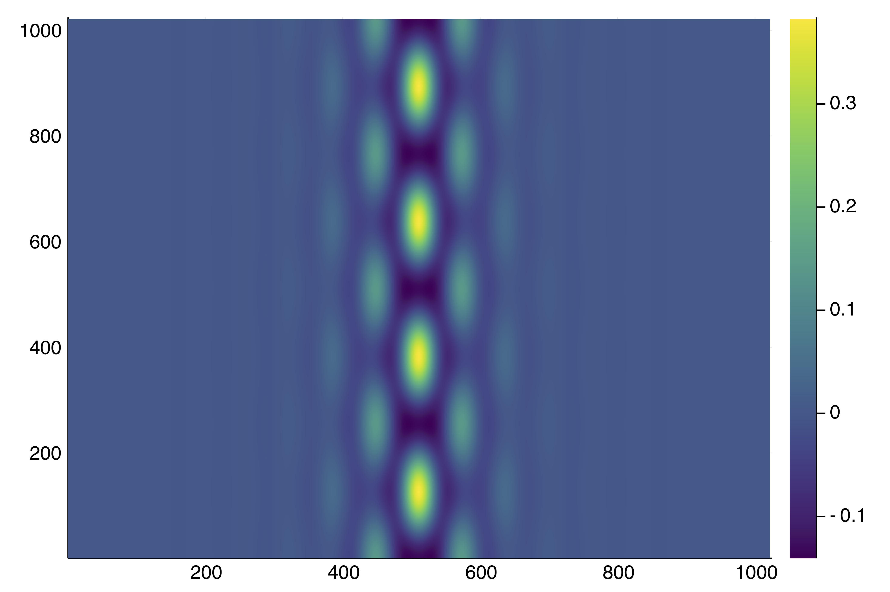
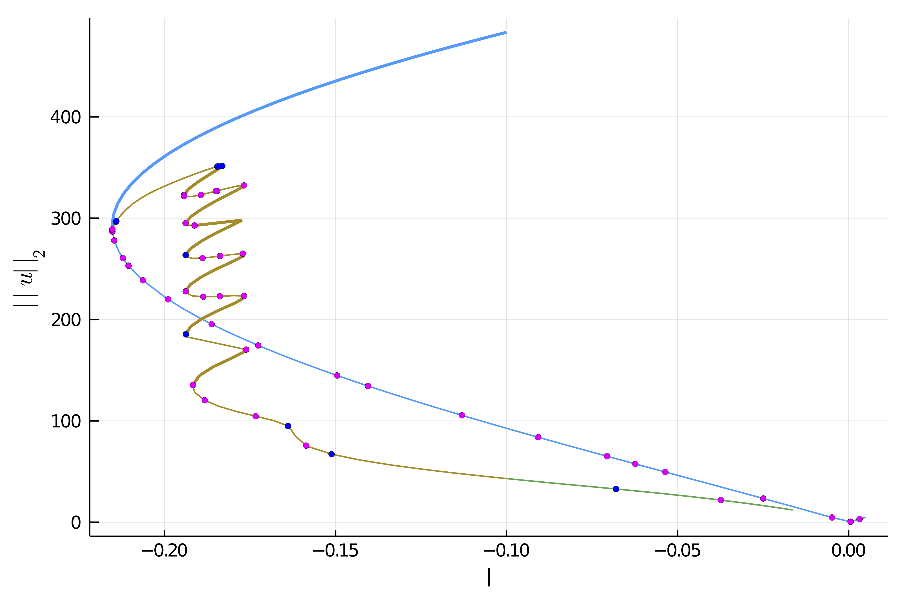

🟠 2d Swift-Hohenberg equation (non-local) on the GPU
Here we give an example where the continuation can be done entirely on the GPU, e.g. on a single V100 NIVDIA.
This is not the simplest GPU example because we need a preconditioned linear solver and shift-invert eigen solver for this problem. On the other hand, you will be shown how to set up your own linear/eigen solver.
We choose the 2d Swift-Hohenberg as an example and consider a larger grid. See 2d Swift-Hohenberg equation for more details. Solving the sparse linear problem in $v$
\[-(I+\Delta)^2 v+(l +2\nu u-3u^2)v = rhs\]
with a direct solver becomes prohibitive. Looking for an iterative method, the conditioning of the jacobian is not good enough to have fast convergence, mainly because of the Laplacian operator. However, the above problem is equivalent to:
\[-v + L \cdot (d \cdot v) = L\cdot rhs\]
where
\[L := ((I+\Delta)^2 + I)^{-1}\]
is very well conditioned and
\[d := l+1+2\nu v-3v^2.\]
Hence, to solve the previous equation, only a few GMRES iterations are required.
In effect, the preconditioned PDE is an example of nonlocal problem.
Linear Algebra on the GPU
We plan to use KrylovKit on the GPU. We define the following types so it is easier to switch to Float32 for example:
using Revise, CUDA# this disable slow operations but errors if you use one of themCUDA.allowscalar(false)# type used for the arrays, can be Float32 if GPU requires itTY = Float64# put the AF = Array{TY} instead to make the code on the CPUAF = CuArray{TY}Computing the inverse of the differential operator
The issue now is to compute $L$ but this is easy using Fourier transforms.
Hence, that's why we slightly modify the previous Example by considering periodic boundary conditions. Let us now show how to compute $L$. Although the code looks quite technical, it is based on two facts. First, the Fourier transform symbol associated to $L$ is
\[l_1 = 1+(1-k_x^2-k_y^2)^2\]
which is pre-computed in the composite type SHLinearOp. Then, the effect of L on u is as simple as real.(ifft( l1 .* fft(u) )) and the inverse L\u is real.(ifft( fft(u) ./ l1 )). However, in order to save memory on the GPU, we use inplace FFTs to reduce temporaries which explains the following code.
using AbstractFFTs, FFTW, KrylovKitusing BifurcationKit, LinearAlgebra, Plotsconst BK = BifurcationKitBK.set_plot_backend!(BK.BK_Plots()) # hide# the following struct encodes the operator L1# Making the linear operator a subtype of BK.AbstractLinearSolver is handy as it will be used# in the Newton iterations.struct SHLinearOp{Treal, Tcomp, Tl1, Tplan, Tiplan} <: BK.AbstractLinearSolver tmp_real::Treal # temporary tmp_complex::Tcomp # temporary l1::Tl1 fftplan::Tplan ifftplan::Tiplanend# this is a constructor for the above structfunction SHLinearOp(Nx, lx, Ny, ly; AF = Array{TY}) # AF is a type, it could be CuArray{TY} to run the following on GPU k1 = vcat(collect(0:Nx/2), collect(Nx/2+1:Nx-1) .- Nx) k2 = vcat(collect(0:Ny/2), collect(Ny/2+1:Ny-1) .- Ny) d2 = [(1-(pi/lx * kx)^2 - (pi/ly * ky)^2)^2 + 1. for kx in k1, ky in k2] tmpc = Complex.(AF(zeros(Nx, Ny))) return SHLinearOp(AF(zeros(Nx, Ny)), tmpc, AF(d2), plan_fft!(tmpc), plan_ifft!(tmpc))endimport Base: *, \# generic function to apply operator op to ufunction apply(c::SHLinearOp, u, multiplier, op = *) c.tmp_complex .= Complex.(u) c.fftplan * c.tmp_complex c.tmp_complex .= op.(c.tmp_complex, multiplier) c.ifftplan * c.tmp_complex c.tmp_real .= real.(c.tmp_complex) return copy(c.tmp_real)end# action of L*(c::SHLinearOp, u) = apply(c, u, c.l1)# inverse of L\(c::SHLinearOp, u) = apply(c, u, c.l1, /)Before applying a Newton solver, we need to tell how to solve the linear equation arising in the Newton Algorithm.
# inverse of the jacobian of the PDEfunction (sh::SHLinearOp)(J, rhs; shift = 0., tol = 1e-9) u, l, ν = J udiag = l .+ 1 .+ 2ν .* u .- 3 .* u.^2 .- shift res, info = KrylovKit.linsolve( du -> -du .+ sh \ (udiag .* du), sh \ rhs, tol, maxiter = 6) return res, true, info.numopsendNow that we have our operator L, we can encode our functional:
function F_shfft(u, p) (;l, ν, L) = p return -(L * u) .+ ((l+1) .* u .+ ν .* u.^2 .- u.^3)endLet us now show how to build our operator L and an initial guess sol0 using the above defined structures.
using LinearAlgebra, Plots# to simplify plotting of the solutionplotsol(x; k...) = heatmap(reshape(Array(x), Nx, Ny)'; color=:viridis, k...)plotsol!(x; k...) = heatmap!(reshape(Array(x), Nx, Ny)'; color=:viridis, k...)norminf(x) = maximum(abs.(x))# norm compatible with CUDAnorminf(x) = maximum(abs.(x))Nx = 2^10Ny = 2^10lx = 8pi * 2ly = 2*2pi/sqrt(3) * 2X = -lx .+ 2lx/(Nx) * collect(0:Nx-1)Y = -ly .+ 2ly/(Ny) * collect(0:Ny-1)sol0 = [(cos(x) .+ cos(x/2) * cos(sqrt(3) * y/2) ) for x in X, y in Y]sol0 .= sol0 .- minimum(vec(sol0))sol0 ./= maximum(vec(sol0))sol0 = sol0 .- 0.25sol0 .*= 1.7L = SHLinearOp(Nx, lx, Ny, ly; AF)J_shfft(u, p) = (u, p.l, p.ν)# parameters of the PDEpar = (l = -0.15, ν = 1.3, L = L)# Bifurcation Problemprob = BK.BifurcationProblem(F_shfft, AF(sol0), par, (@optic _.l) ; J = J_shfft, plot_solution = (x, p;kwargs...) -> plotsol!(x; color=:viridis, kwargs...), record_from_solution = (x, p; k...) -> norm(x))Newton iterations and deflation
We are now ready to perform Newton iterations:
opt_new = NewtonPar(verbose = true, tol = 1e-6, max_iterations = 100, linsolver = L)sol_hexa = @time BK.solve(prob, Newton(), opt_new, normN = norminf)println("--> norm(sol) = ", maximum(abs.(sol_hexa.u)))plotsol(sol_hexa.u)You should see this:
┌─────────────────────────────────────────────────────┐│ Newton step residual linear iterations │├─────────────┬──────────────────────┬────────────────┤│ 0 │ 3.3758e-01 │ 0 ││ 1 │ 8.0152e+01 │ 12 ││ 2 │ 2.3716e+01 │ 28 ││ 3 │ 6.7353e+00 │ 22 ││ 4 │ 1.9498e+00 │ 17 ││ 5 │ 5.5893e-01 │ 14 ││ 6 │ 1.0998e-01 │ 12 ││ 7 │ 1.1381e-02 │ 11 ││ 8 │ 1.6393e-04 │ 11 ││ 9 │ 7.3277e-08 │ 10 │└─────────────┴──────────────────────┴────────────────┘ 0.070565 seconds (127.18 k allocations: 3.261 MiB)--> norm(sol) = 1.26017611779702Note that this is about the 30x faster than Example 2 but for a problem almost 100x larger! (On a V100 GPU)
The solution is:

We can also use the deflation technique (see DeflationOperator and DeflatedProblem for more information) on the GPU as follows
deflationOp = DeflationOperator(2, dot, 1.0, [sol_hexa.u])opt_new = @set opt_new.max_iterations = 250outdef = @time BK.solve(re_make(prob, u0 = AF(0.4 .* sol_hexa.u .* AF([exp(-1(x+0lx)^2/25) for x in X, y in Y]))), deflationOp, opt_new, normN = x-> maximum(abs.(x)))println("--> norm(sol) = ", norm(outdef.u))plotsol(outdef.u) |> displayBK.converged(outdef) && push!(deflationOp, outdef.u)and get:

Computation of the branches
Finally, we can perform continuation of the branches on the GPU:
opts_cont = ContinuationPar(dsmin = 0.001, dsmax = 0.007, ds= -0.005, p_max = 0., p_min = -1.0, plot_every_step = 5, detect_bifurcation = 3, newton_options = setproperties(opt_new; tol = 1e-6, max_iterations = 15), max_steps = 100)br = @time continuation(re_make(prob, u0 = deflationOp[1]),PALC(bls = BorderingBLS(solver = L, check_precision = false)),opts_cont; plot = true, verbosity = 3, normC = x -> maximum(abs.(x)) )We did not detail how to compute the eigenvalues on the GPU and detect the bifurcations. It is based on a simple Shift-Invert strategy, please look at examples/SH2d-fronts-cuda.jl.

We have the following information about the branch of hexagons
julia> br┌─ Curve type: EquilibriumCont ├─ Number of points: 66 ├─ Type of vectors: CuArray{Float64, 2, CUDA.DeviceMemory} ├─ Parameter l starts at -0.15, ends at 0.005 ├─ Algo: PALC └─ Special points:- # 1, nd at l ≈ -0.21527227 ∈ (-0.21528429, -0.21527227), |δp|=1e-05, [ guessL], δ = ( 2, 0), step = 17- # 2, nd at l ≈ -0.21473544 ∈ (-0.21478790, -0.21473544), |δp|=5e-05, [ guessL], δ = ( 2, 0), step = 18- # 3, nd at l ≈ -0.21250580 ∈ (-0.21262132, -0.21250580), |δp|=1e-04, [ guessL], δ = ( 2, 0), step = 20- # 4, nd at l ≈ -0.21049751 ∈ (-0.21064704, -0.21049751), |δp|=1e-04, [ guess], δ = ( 2, 0), step = 21- # 5, nd at l ≈ -0.20955332 ∈ (-0.20971589, -0.20955332), |δp|=2e-04, [ guessL], δ = ( 4, 0), step = 22- # 6, bp at l ≈ -0.20586004 ∈ (-0.20606348, -0.20586004), |δp|=2e-04, [ guessL], δ = ( 1, 0), step = 24- # 7, nd at l ≈ -0.19890182 ∈ (-0.19915853, -0.19890182), |δp|=3e-04, [ guessL], δ = ( 2, 0), step = 26- # 8, nd at l ≈ -0.19864215 ∈ (-0.19890182, -0.19864215), |δp|=3e-04, [ guess], δ = ( 2, 0), step = 27- # 9, nd at l ≈ -0.18708961 ∈ (-0.18740461, -0.18708961), |δp|=3e-04, [ guessL], δ = ( 2, 0), step = 30- # 10, nd at l ≈ -0.17710705 ∈ (-0.17745465, -0.17710705), |δp|=3e-04, [ guessL], δ = ( 3, 0), step = 32- # 11, bp at l ≈ -0.17357172 ∈ (-0.17392941, -0.17357172), |δp|=4e-04, [ guessL], δ = ( 1, 0), step = 33- # 12, bp at l ≈ -0.15063090 ∈ (-0.15103338, -0.15063090), |δp|=4e-04, [ guessL], δ = (-1, 0), step = 37- # 13, nd at l ≈ -0.15022700 ∈ (-0.15063090, -0.15022700), |δp|=4e-04, [ guess], δ = (-3, 0), step = 38- # 14, nd at l ≈ -0.14079246 ∈ (-0.14120844, -0.14079246), |δp|=4e-04, [ guess], δ = (-2, 0), step = 40- # 15, nd at l ≈ -0.11282985 ∈ (-0.11327206, -0.11282985), |δp|=4e-04, [ guess], δ = (-4, 0), step = 45- # 16, nd at l ≈ -0.09040810 ∈ (-0.09086196, -0.09040810), |δp|=5e-04, [ guessL], δ = (-6, 0), step = 49- # 17, nd at l ≈ -0.07120307 ∈ (-0.07166296, -0.07120307), |δp|=5e-04, [ guessL], δ = (-3, 0), step = 52- # 18, nd at l ≈ -0.06198642 ∈ (-0.06244792, -0.06198642), |δp|=5e-04, [ guessL], δ = (-2, 0), step = 54- # 19, nd at l ≈ -0.05366990 ∈ (-0.05413224, -0.05366990), |δp|=5e-04, [ guessL], δ = (-2, 0), step = 56- # 20, nd at l ≈ -0.02503291 ∈ (-0.02549304, -0.02503291), |δp|=5e-04, [ guessL], δ = (-2, 0), step = 60- # 21, nd at l ≈ -0.00628734 ∈ (-0.00674105, -0.00628734), |δp|=5e-04, [ guess], δ = (-2, 0), step = 63- # 22, nd at l ≈ +0.00004100 ∈ (-0.00040962, +0.00004100), |δp|=5e-04, [ guessL], δ = ( 2, 0), step = 64- # 23, nd at l ≈ +0.00500000 ∈ (+0.00500000, +0.00500000), |δp|=0e+00, [ guess], δ = ( 9, 0), step = 65- # 24, endpoint at l ≈ +0.00500000, step = 65Automatic branch switching on the GPU
Instead of relying on deflated newton, we can use Branch switching to compute the different branches emanating from the bifurcation point. For example, the following code will perform automatic branch switching from the second bifurcation point of br:
br2 = continuation(br, 2, setproperties(optcont; ds = -0.001, detect_bifurcation = 3, plot_every_step = 5, max_steps = 170); nev = 30, plot = true, verbosity = 2, normC = norminf)We can then plot the branches using plot(br, br1, br2) and get